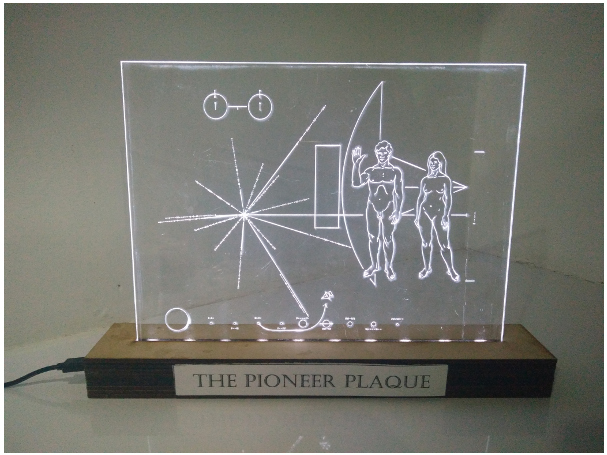

SPACE EXPLORATION, PERSEVERANCE AND UTOPIA

I’ve had a love hate relationship with space exploration. The Sagan quote “These days, there seems to be nowhere left to explore. Victims of their very success, the explorers now, pretty much, stay home. Maybe it’s a little early- maybe the time is not quite yet- but those other worlds, promising untold opportunities, beckon. Just now, there a great many matters that are pressing in on us that compete for the money it takes to send people to other worlds. Should we solve those problems first, or are they a reason for going? Should we solve those problems first, or are they a reason for going?..” has been the topic of many a daydreams and lost thoughts. I recently heard a podcast about the Mars Orbital Mission and some of those thoughts came back to me.
Whether valid or not, space exploration has always inspired me for the sheer technological prowess that it represents. I made this laser etched Pioneer Plaque to keep right next to the desk at my workshop. I look at it when I feel tempted to give up. I imagine the emotions of the thousands of people involved in the project. Knowing that the satellite they were working on might just crash and burn, might never make it to it’s celestial destination. But still, they had the audacity to hope and dream, and put this plaque so that we may talk to someone out there. To me, this plaque represents perseverance and never giving up hope and believing against all odds that we as a collective can succeed.
I believe in the dream of the Utopean society; with no need going unsatisfied, nothing out of reach, but for the lack of reaching out. On a dark day, this plaque reminds me that ridiculous dreams can come true. And I forget whatever silly thing I was stressing about and get back to work. Because we’re not in utopia.. yet.